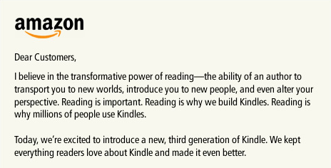

marco:
Given how well Jeff Bezos usually prioritizes reading and legibility, why are his announcements on the Amazon frontpage always images of poorly rendered text?
In other news, I kind of want a new Kindle.